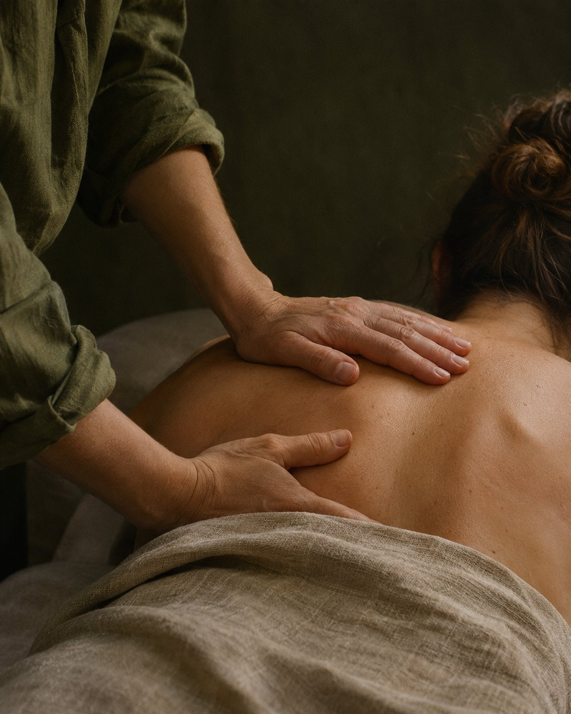

Thérapie manuelle
Je m’appuie sur l’évaluation orthopédique et les techniques myofasciales, viscérales et neurofasciales pour adapter les soins à vos besoins.
Massothérapie agréée
Je suis Alison Coolican, massothérapeute agréée et formatrice à Vernon, en Colombie-Britannique. J’allie la thérapie manuelle à l’éducation au mouvement pour vous aider à pratiquer les activités qui comptent pour vous.
Vernon, Colombie-Britannique

Mon approche
On commence par parler de votre parcours, de vos mouvements et des activités que vous aimeriez reprendre. Cet échange oriente le traitement et le travail que nous faisons ensemble.
Je m’appuie sur l’évaluation orthopédique et les techniques myofasciales, viscérales et neurofasciales pour adapter les soins à vos besoins.
Ensemble, on peut explorer des façons de bouger qui vous apportent plus de confort au quotidien.
Je vous explique ce que je fais et pourquoi, pour vous aider à prendre des décisions éclairées au sujet de vos soins.

Votre massothérapeute
Je suis massothérapeute agréée depuis 2005. Ma pratique s’appuie sur ma formation en anatomie et en biologie cellulaire, mon étude continue des fascias et un intérêt de longue date pour le mouvement.
J’enseigne dans des programmes de massothérapie depuis 2008 et j’ai présenté une conférence sur les fascias et l’anatomie au congrès annuel de l’Association canadienne de pédorthie. En dehors du cabinet, je fais du vélo, de l’escalade, du ski et du yoga.
Ressources
Vidéos, notes d’ateliers et articles issus de ma pratique.
Découvrez une vidéo d’initiation à l’automassage avec une balle et des lectures sur la douleur persistante.
Voir les ressourcesParcourez les anciennes présentations sur le mouvement, l’anatomie et l’automassage.
Voir les ateliers passésExplorez l’équilibre, la respiration et le mouvement au quotidien.
Lire les articlesLe cabinet à Vernon
Dans Cliniko, choisissez un premier rendez-vous ou une séance de suivi pour consulter les disponibilités. Pour toute question, vous pouvez me joindre par mon formulaire de contact.
Les liens vers la biographie, les ressources, Cliniko et le formulaire de contact mènent à des pages en anglais.